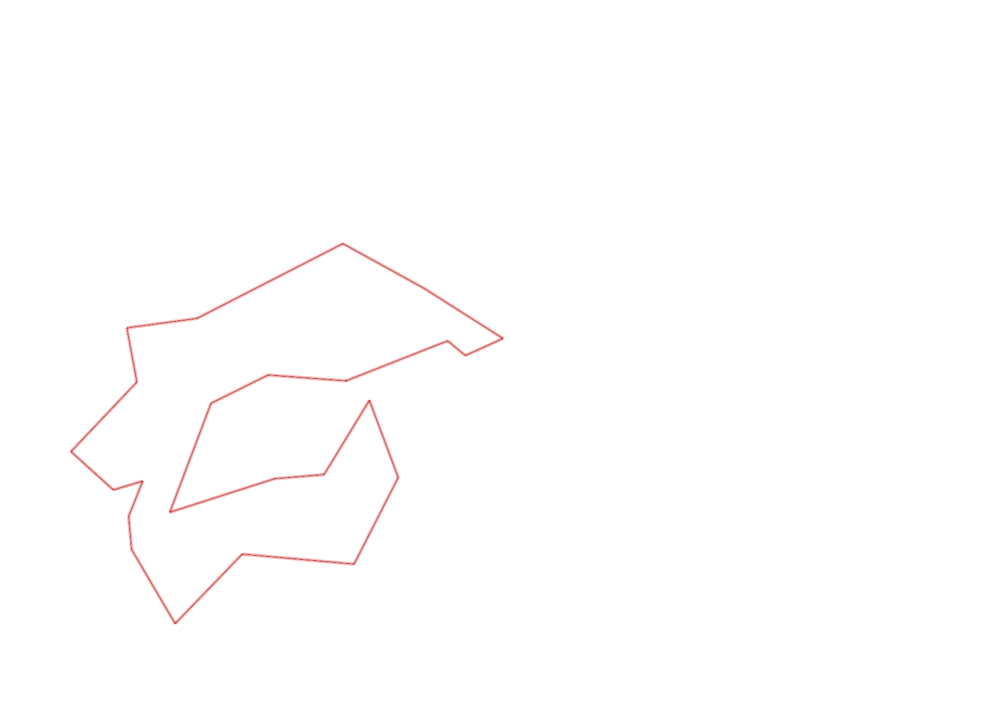
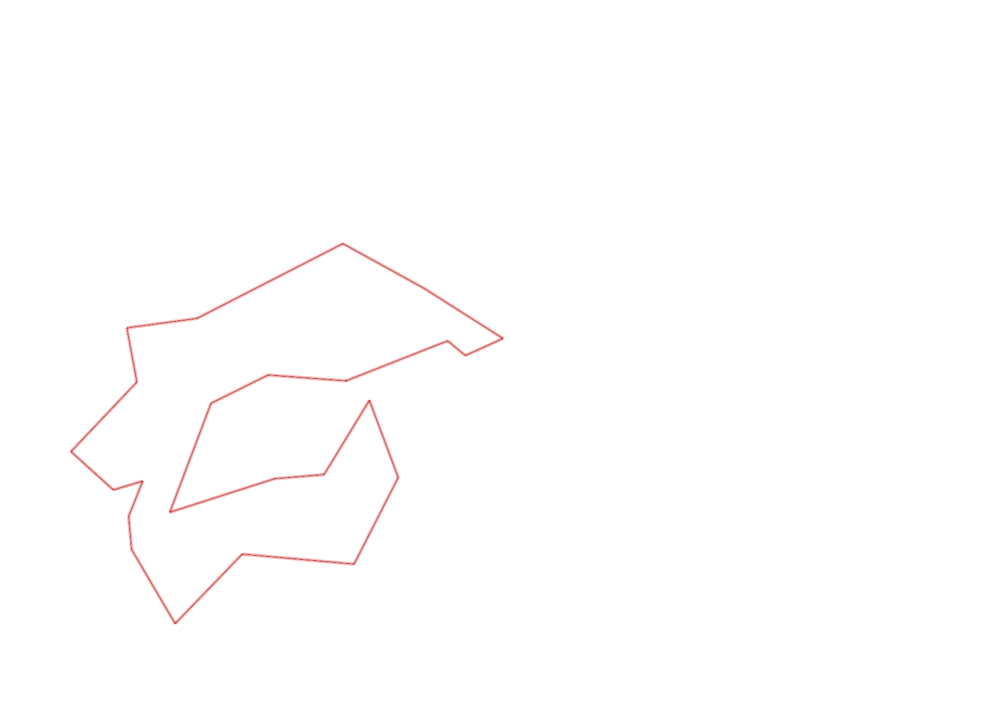

| Control |
Points |
Time Punched |
Distance |
Your Time |
Pace |
Place |
Fastest Time |
Median Time |
% Behind Fastest |
| 92 |
90 |
|
0.23 |
0:02:43 |
11:48 |
8 / 11 |
0:02:15 |
0:02:35 |
20% |
| 35 |
30 |
|
0.05 |
0:01:46 |
35:20 |
3 / 12 |
0:01:31 |
0:01:55 |
16% |
| 47 |
40 |
|
0.09 |
0:01:31 |
16:51 |
6 / 11 |
0:00:54 |
0:01:31 |
68% |
| 57 |
50 |
|
0.2 |
0:04:05 |
20:25 |
2 / 7 |
0:03:52 |
0:04:28 |
5% |
| 107 |
100 |
|
0.2 |
0:02:52 |
14:20 |
11 / 21 |
0:00:00 |
0:02:52 |
-% |
| 63 |
60 |
|
0.35 |
0:03:31 |
10:02 |
12 / 18 |
0:01:59 |
0:02:42 |
77% |
| 32 |
30 |
|
0.15 |
0:00:56 |
06:13 |
13 / 27 |
0:00:36 |
0:00:56 |
55% |
| 44 |
40 |
|
0.12 |
0:01:55 |
15:58 |
16 / 29 |
0:00:52 |
0:01:49 |
121% |
| 53 |
50 |
|
0.2 |
0:01:40 |
08:20 |
6 / 26 |
0:01:31 |
0:02:15 |
9% |
| 69 |
60 |
|
0.12 |
0:01:20 |
11:06 |
17 / 29 |
0:00:45 |
0:01:18 |
77% |
| 54 |
50 |
|
0.07 |
0:01:38 |
23:19 |
1 / 4 |
0:01:38 |
0:01:57 |
0% |
| 71 |
70 |
|
0.08 |
0:01:43 |
21:27 |
5 / 5 |
0:00:23 |
0:00:29 |
347% |
| 40 |
40 |
|
0.07 |
0:01:35 |
22:37 |
4 / 9 |
0:00:40 |
0:01:52 |
137% |
| 77 |
70 |
|
0.18 |
0:02:20 |
12:57 |
9 / 21 |
0:01:35 |
0:02:21 |
47% |
| 59 |
50 |
|
0.21 |
0:02:28 |
11:44 |
6 / 18 |
0:02:00 |
0:02:47 |
23% |
| 61 |
60 |
|
0.24 |
0:03:00 |
12:30 |
4 / 19 |
0:02:14 |
0:03:16 |
34% |
| 42 |
40 |
|
0.21 |
0:05:06 |
24:17 |
12 / 14 |
0:02:19 |
0:03:34 |
120% |
| 127 |
20 |
|
0.17 |
0:01:51 |
10:52 |
7 / 12 |
0:01:27 |
0:01:48 |
27% |
| 38 |
30 |
|
0.18 |
0:01:55 |
10:38 |
10 / 13 |
0:01:04 |
0:01:50 |
79% |
| 60 |
60 |
|
0.11 |
0:00:46 |
06:58 |
4 / 19 |
0:00:42 |
0:00:57 |
9% |
| 41 |
40 |
|
0.23 |
0:02:12 |
09:33 |
7 / 7 |
0:01:41 |
0:01:52 |
30% |
| 130 |
30 |
|
0.25 |
0:01:49 |
07:16 |
1 / 2 |
0:01:49 |
0:03:20 |
0% |
| 126 |
20 |
|
0.14 |
0:01:23 |
09:52 |
6 / 12 |
0:01:09 |
0:01:26 |
20% |
| Finish |
0 |
|
0.17 |
0:01:46 |
10:23 |
9 / 9 |
0:00:31 |
0:00:57 |
241% |
Total Distance Covered: 4.02km
Points Scored: 1130
Late Penalty: 0
Final Score: 1130
Total Time: 0hours 51minutes 51seconds
Efficiency: 281.09 points/km
 
